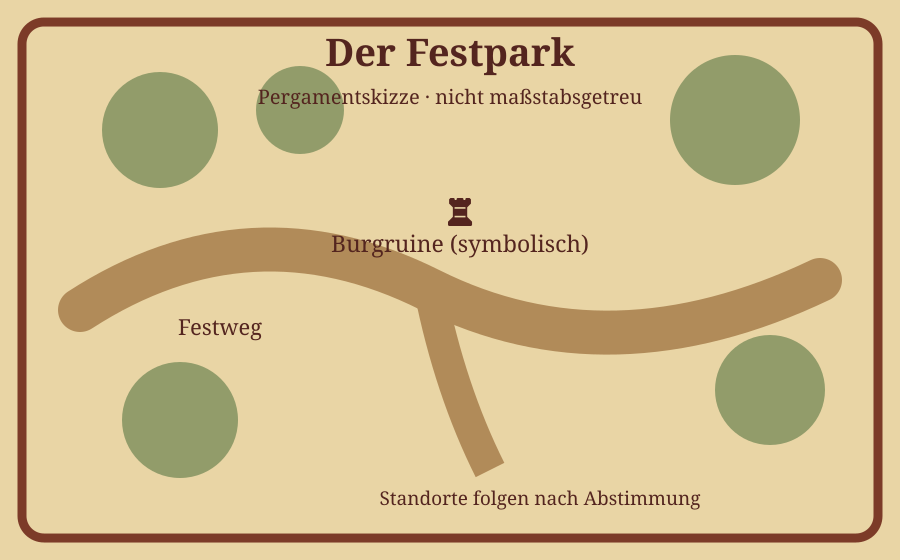

Musik mit Gregs Confusus
Einblicke in die mittelalterliche Musik auf dem Fest.
MITTELALTERFEST IN TEUBLITZ
Geschichte · Musik · Marktleben
Burgruine Teublitz – symbolische Illustration
Entdeckt Musik, mittelalterliches Lagerleben und Marktstände im Festpark von Teublitz. Diese Seite ist eine Vorschau; aktuelle Termine und Details werden noch ergänzt.
Das vollständige aktuelle Programm und die Uhrzeiten werden nach Prüfung ergänzt.
Einblicke in die mittelalterliche Musik auf dem Fest.

Vorläufige Illustration: Wege, Zugänge und Standorte sind noch nicht geografisch überprüft. Kein offizieller Orientierungsplan.
Hier erscheinen später Händler, Speisen, Lagergruppen und weitere Attraktionen mit anklickbaren Informationen.